Show other secondary papers
A self-compliant selector-free memory with functional bismuth ferrite
Authors: Suman Roy, Subhabrata Das, Priyanka Sahu, Majid Ahmadi, Sameer Kumar Mallik, Kaushik Ghosh, Saroj Prasad Dash, Satyaprakash Sahoo
Type: experiment · Category: other · PDF: https://arxiv.org/pdf/2609.15732v1
Analysis basis: full PDF text, analyzed in chunks
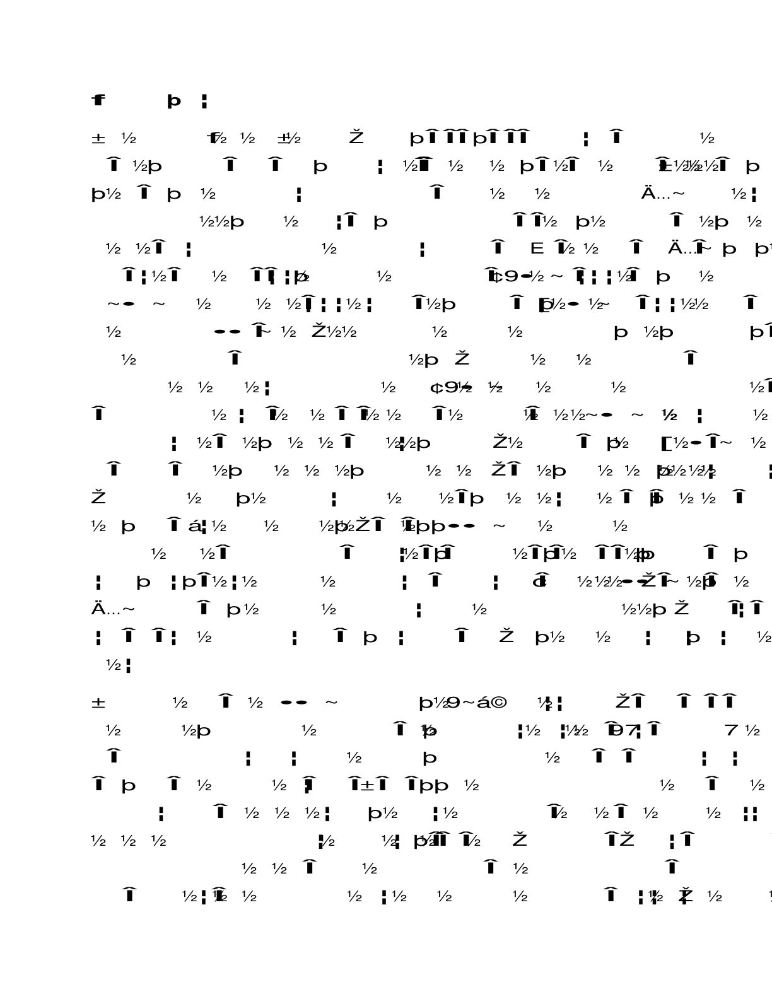
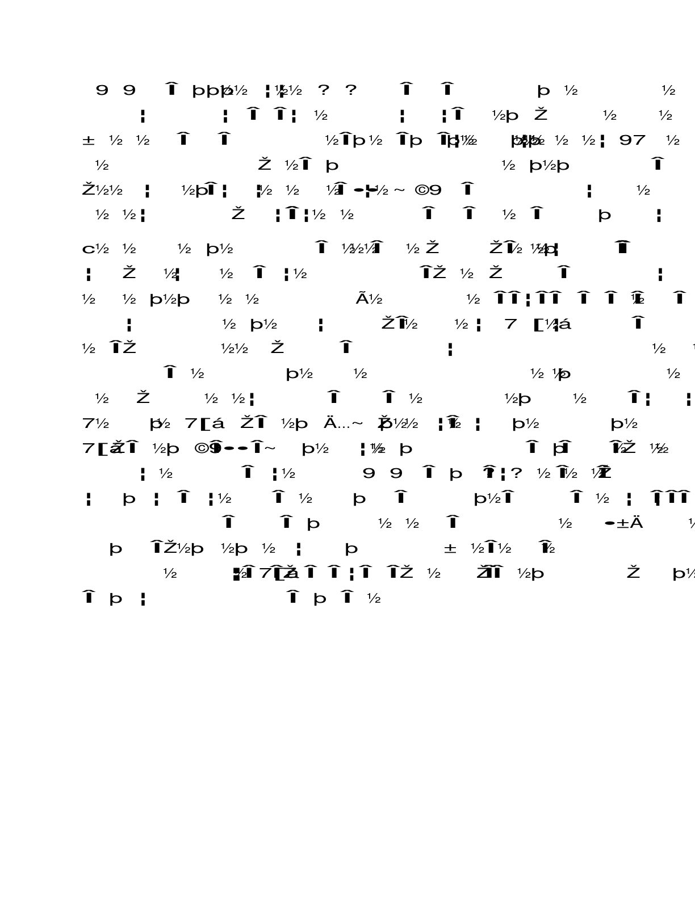
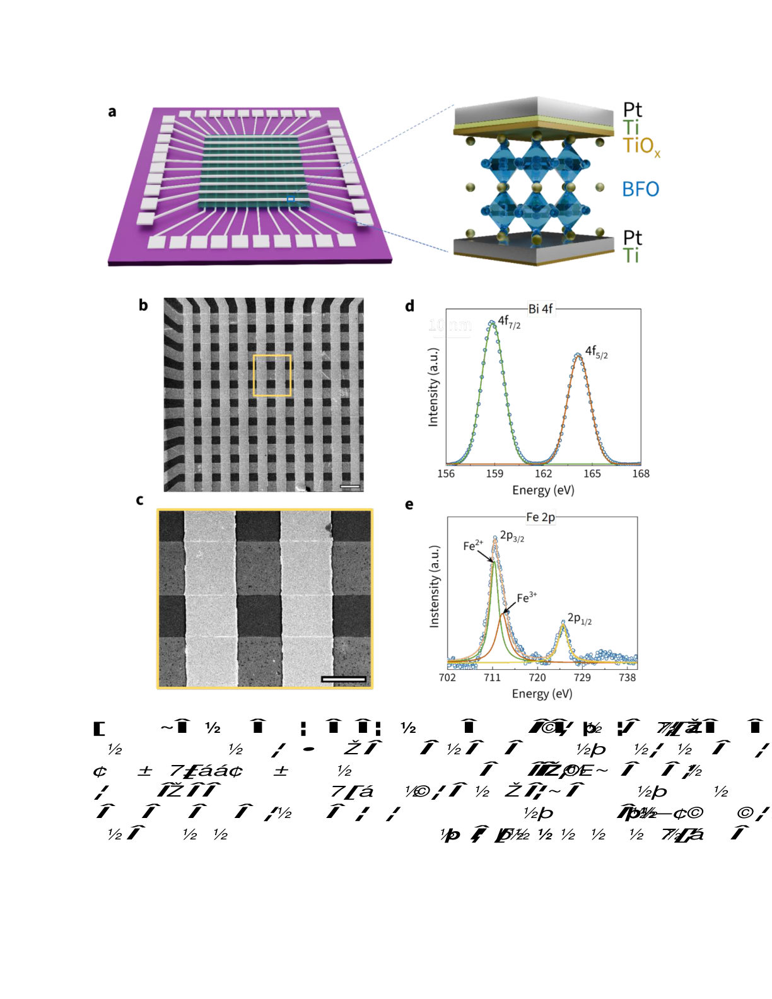
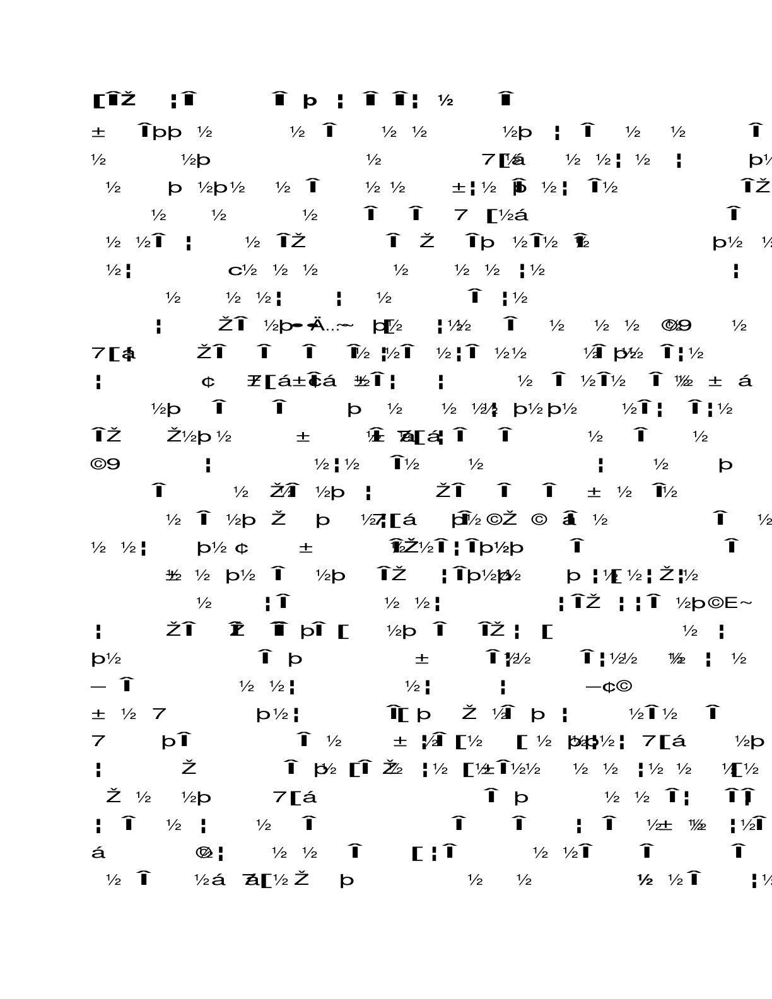
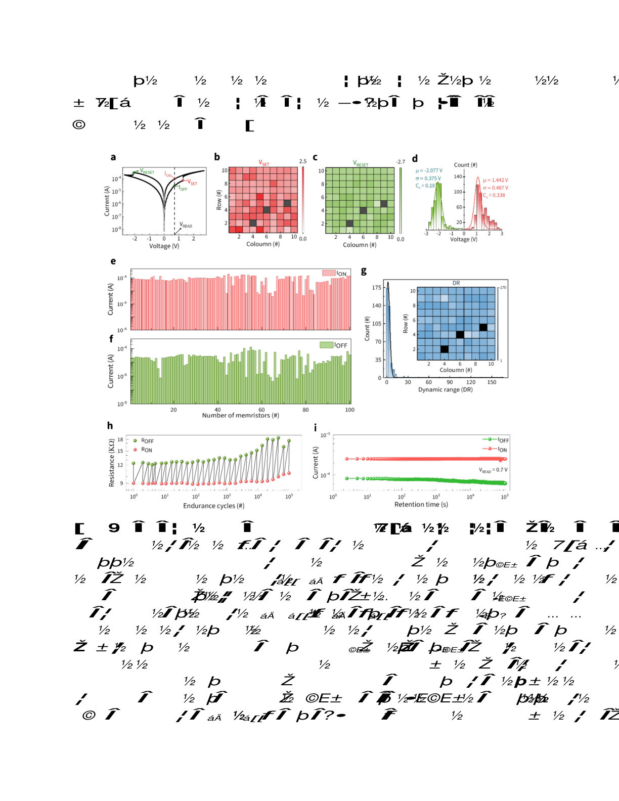
Summary. This paper introduces a novel, highly reliable memory device utilizing bismuth ferrite (BiFeO3) that operates without external selectors. By leveraging a naturally formed interfacial layer, the device achieves stable, bipolar switching and supports 4-bit multilevel data storage. These results establish BiFeO3 as a practical material platform for next-generation, scalable computing architectures.
Why it may be interesting. While the core physics is condensed matter/device physics, the focus on robust, high-density memory elements and functional materials is relevant to the hardware implementation aspects of quantum computing architectures.
Detailed structure
Main problem. The challenge in in-memory computing to achieve selector-free operation, low variability, and stable multilevel switching simultaneously.
Main result. The authors demonstrate that BiFeO3 can function as a robust, self-compliant, selector-free memory, enabling stable bipolar switching and 4-bit multilevel operation.
Method. Experimental characterization of memristive crossbar arrays using functional bismuth ferrite.
Model / system. The physical system is a multiferroic BiFeO3 memristive crossbar array. The key mechanism involves a naturally formed TiOx interfacial layer that imparts self-compliance, eliminating the need for external selector devices.
Key observables. Stable bipolar switching, 97% device yield, endurance > 10^5 cycles, retention > 10^5 s, 16 well-separated conductance states, and predominantly 1/f-type noise behavior.
Important parameters / regimes. Multilevel operation (4-bit), selector-free operation, and the material properties of BiFeO3.
Assumptions / limitations. The primary assumption is that the naturally formed TiOx layer facilitates the necessary self-compliance for reliable operation.
Paper structure. The paper presents a demonstration of the device's capabilities, focusing on achieving key metrics like yield, endurance, and multilevel switching using the functional material.
Abstract
In-memory computing requires selector-free operation, low variability, and stable multilevel switching, all of which remain challenging to achieve in a single system. Here, we demonstrate a robust selector-free memory based on a multiferroic BiFeO3 that combines self-compliance with stable bipolar switching, high yield, long endurance, and extended retention. We observe that BiFeO3 memristive crossbar arrays become self-compliant through a naturally formed TiOx interfacial layer, enabling forming-free bipolar switching without external selector devices, addressing major bottlenecks that have limited the practical deployment of resistive memories. The array delivers stable bipolar switching with a 97% device yield, endurance beyond 105 cycles, and data retention exceeding 105 s with low cycle-to-cycle and device-to-device variability. In addition, the devices exhibit 16 well-separated conductance states, enabling 4-bit multilevel operation via precise pulse-controlled programming for digit visualization in edge applications. Noise measurements reveal predominantly 1/f-type behavior with minimal random telegraph noise, indicating robust conductance stability across the programmable window. These results establish BiFeO3 as a practical materials platform for multibit, selector-free crossbar memories offering high reliability, making it well-suited for scalable computing architectures based on functional materials.
Disorder-driven transport in ZrN thin films grown by ion-beam-assisted sputtering
Authors: Maximo DiPreta, Samuel Jiang, Serhii Kruhlov, Yi Li, Valentine Novosad, Tomas Polakovic
Type: experiment · Category: disordered systems and neural networks · PDF: https://arxiv.org/pdf/2609.13568v1
Analysis basis: full PDF text, analyzed in chunks
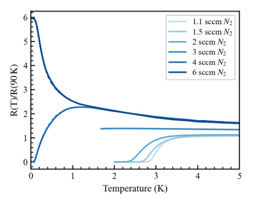
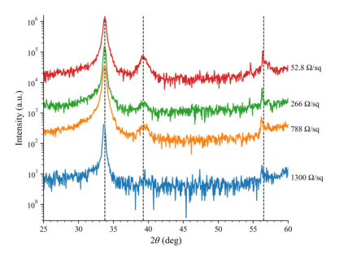

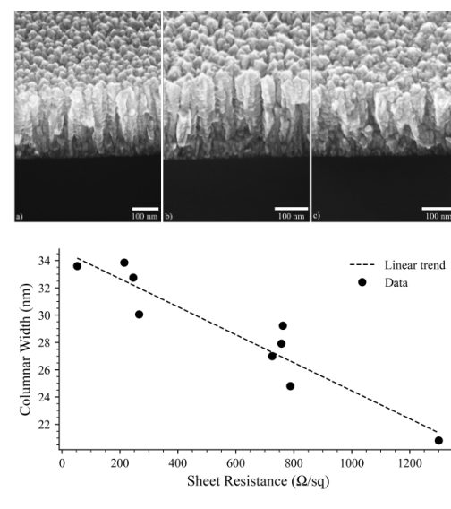
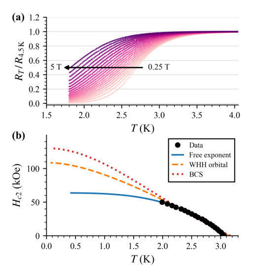
Summary. This work establishes ZrN thin films grown by IBAS as a highly tunable platform to study the interplay between disorder, localization, and superconductivity. By controlling growth parameters, the researchers tune the material through metallic, insulating (Mott VRH), and superconducting regimes. The key finding is the decoupling between the localization scale and the superconducting critical temperature, offering insights into the nature of pairing in disordered superconductors.
Why it may be interesting. The clear separation of the disorder-induced localization scale ($T_0$) from the superconducting scale ($T_c$) provides a clean experimental platform to study how disorder affects different quantum phenomena independently.
Detailed structure
Main problem. The study investigates disorder-driven transport and the crossover between metallic conduction, electronic localization, and superconductivity in ZrN thin films.
Main result. The system exhibits a clear decoupling between the superconducting energy scale ($T_c$) and the localization physics (Mott VRH scale $T_0$), suggesting distinct physical origins for these phenomena.
Method. The research combines controlled thin-film synthesis via ion-beam-assisted sputtering (IBAS) with comprehensive electrical transport measurements, including low-temperature resistivity and magnetotransport.
Model / system. The physical system is ZrN thin films grown by IBAS, allowing tuning of disorder by varying nitrogen partial pressure and deposition temperature. The analysis models transport using 3D Mott Variable-Range Hopping (VRH) for localization and fits the upper critical field ($H_{c2}(T)$) to an empirical power law.
Key observables. Sheet resistance ($R_\square$), superconducting transition temperature ($T_c$), Mott characteristic temperature ($T_0$), and the upper critical field ($\mu_0 H_{c2}(T)$).
Important parameters / regimes. Nitrogen partial pressure, sputtering power, deposition temperature, coherence length ($\xi(0) \approx 7 ext{ nm}$), and the exponent $n \approx 3.47$ for the $H_{c2}(T)$ fit.
Assumptions / limitations. The analysis assumes that superconductivity develops within individual crystalline columns, while the insulating behavior (VRH) is governed by transport across inter-columnar boundaries.
Figures summary. Figures illustrate the evolution of resistance and $T_c$ with growth conditions, show the linear relationship between $\ln R$ and $T^{-1/4}$ confirming VRH, and plot the magnetic field dependence of $H_{c2}(T)$ against various theoretical models.
Paper structure. The paper systematically explores the effect of growth parameters on microstructure and transport, first establishing the tunable nature of the material, then analyzing the insulating regime via VRH, and finally characterizing the superconducting phase boundary.
Abstract
We investigate the structural and electronic transport properties of zirconium nitride (ZrN) thin films grown by dc ion-beam assisted sputtering (IBAS) as a function of nitrogen partial pressure, sputtering power and deposition temperature. Variation of growth conditions enables controlled tuning from disordered metallic and superconducting behavior to insulating transport. Increasing nitrogen flow drives an increase in sheet resistance, suppression of superconducting transition temperature, and non-metallic conduction. XRD shows no measurable change in long range crystallinity or order. In the insulating regime, low-temperature transport is well described by 3D Mott variable-range hopping (VRH), with the characteristic temperature $T_0$ increasing monotonically with sheet resistance over four orders of magnitude. Despite this strong correlation between $T_0$ and disorder, $T_c$ exhibits no systematic dependence on $T_0$, indicating a decoupling between localization physics and the superconducting energy scale. Magnetotransport measurements are not well described by the standard BCS model nor the dirty type-II Werthamer-Helfand-Hohenberg model. The phase boundary is instead captured by a free-exponent power law, $μ_0 H_{c2}(T) = μ_0 H_{c2}(0)[1 - (T/T_c)^{n}]$ with $n \approx 3.47$, and extrapolates to $μ_0 H_{c2}(0) \approx 6.4$ T. The films have an extracted coherence length of 7 nm. These results establish IBAS-grown ZrN as a broadly tunable platform for investigating disorder-driven transport and the crossover between metallic conduction, electronic localization, and superconductivity.
First Demonstration of Flip DRAM from Process, Architecture to System to Push DRAM Scaling beyond 4F2: 2F2 Self-aligned Flip Vertical Channel Transistor (FVCT) DRAM and Flip WL (FWL) 3D-DRAM
Authors: Yu Liu, Xinyue He, Yanbang Chu, Siyuan Liu, Jianxiang Jin, Fangcheng Sun, Yuyang Qiao, Xu Tian, Lan Li, Baokang Peng, Lining Zhang, Xing Wu, Pengpeng Ren, Zhigang Ji, Zongwei Wang, Lijie Zhang, Xinwei Wan, Weihai Bu, Ming Li, Runsheng Wang, Heng Wu, Ru Huang
Type: theory · Category: other · PDF: https://arxiv.org/pdf/2609.14464v1
Analysis basis: full PDF text, analyzed in chunks
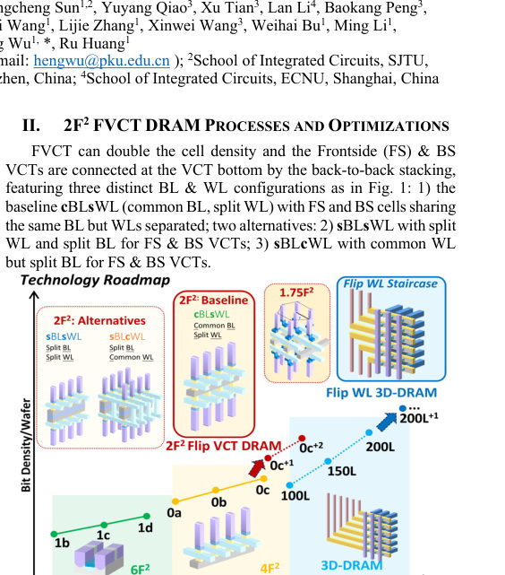
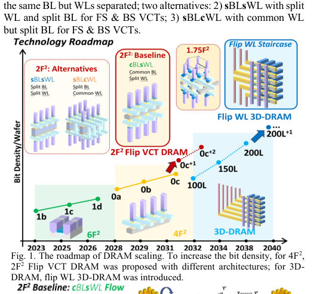
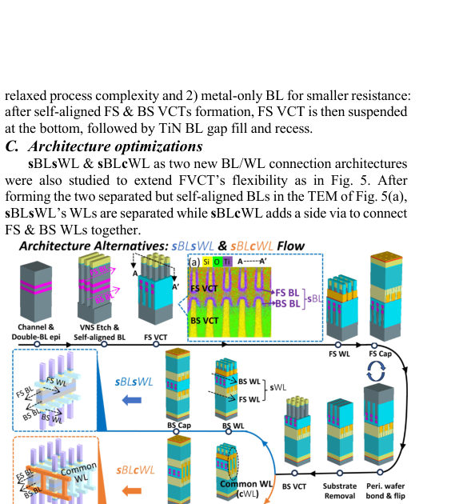
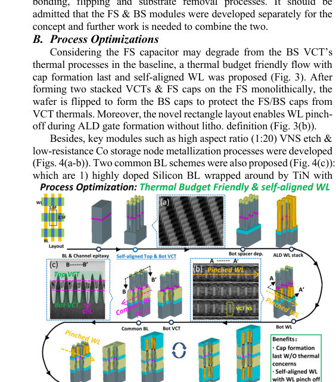
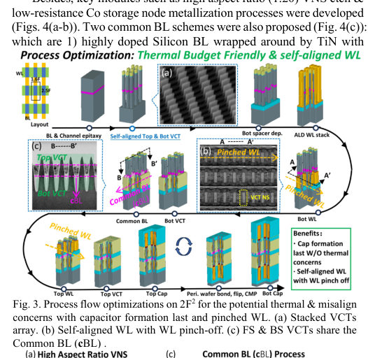
Summary. This work proposes novel, backside-utilizing stacking technologies to overcome the physical limitations of DRAM scaling beyond $4F^2$. By developing $2F^2$ Flip VCT and Flip WL 3D-DRAM, the authors demonstrate significant performance enhancements, including reduced parasitics, increased density, and faster operation, extending the viability of DRAM technology.
Why it may be interesting. The paper is highly relevant to the engineering aspects of solid-state physics and device scaling, demonstrating how fundamental material and process innovations can push the boundaries of information storage technology.
Detailed structure
Main problem. The paper addresses the critical challenge of scaling DRAM beyond the established $4F^2$ limit due to inherent process complexity and physical constraints.
Main result. Novel flip stacking technologies, specifically $2F^2$ Flip VCT and Flip WL 3D-DRAM, were demonstrated to significantly improve performance metrics like density, speed, and parasitics compared to existing scaling methods.
Method. The research involves developing and simulating advanced process modules, including self-aligned stacking, wafer bonding, and backside processing, within a comprehensive Device-to-Material-to-Chip (DTCO) framework.
Model / system. The focus is on advanced DRAM architectures, including $2F^2$ Flip VCT (using self-aligned back-to-back stacked 1T1C bitcells) and Flip WL 3D-DRAM, which utilize the wafer backside for enhanced scaling.
Key observables. Parasitics (27.5% reduction), Sense Margin (11% improvement), Charge Sharing (CS) speed (16.3% increase), Area (50% reduction for 2F2 FVCT), Density gain (25% for 3D-DRAM), and Turn-on speed (15.1% faster for 3D-DRAM).
Important parameters / regimes. Scaling limits ($4F^2$), process nodes (2F2, 3D), and physical dimensions (e.g., $1024 imes 1024$ arrays).
Assumptions / limitations. The analysis relies heavily on detailed SPICE modeling, neural network fitting, and established open-source DRAM simulators like Ramulator for chip-level evaluation.
Figures summary. Figures illustrate the roadmap for scaling, detailed process flows for $2F^2$ FVCT, and comparative simulations showing performance gains for both 2F2 and 3D-DRAM architectures.
Paper structure. The paper progresses by first identifying the scaling bottleneck, then proposing the $2F^2$ Flip VCT and Flip WL 3D-DRAM solutions, detailing the necessary process modules, and finally quantifying the performance improvements across various metrics (noise, latency, density) compared to the $4F^2$ baseline.
Abstract
For the first time, we proposed a novel stacking technology for DRAM scaling by flipping and backside processes, making full use of DRAM wafer's backside and investigating it on both 4F2 and 3D-DRAM. For 4F2 VCT, 2F2 Flip VCT featuring self-aligned back-to-back stacked 1T1C bitcell, with various BL and WL configurations, were studied and key process modules such as self-aligned stacked vertical channel, BL and WL formations, wafer bonding and flipping, substrate thinning and low-R Co storage node (SN) were successfully developed, addressing the potential thermal, misalign and parasitic concerns in the Flip VCT process. A full DRAM DTCO framework was also established from device to mat and chip level. Compared to 4F2 VCT DRAM with the same mat size, 2F2 FVCT delivers 27.5% less parasitics, 11% better sense margin, 16.3% higher charge sharing (CS) speed and 50% less area. For 3D-DRAM, a brand-new flip WL staircase design with peripheral circuit innovations was studied and proved to have 25% density gain, 15.1% faster turn-on speed and 6.8% less CS time, proving further extendibility of flip technology on DRAM.
Heating of black-Si by microwaves at 2.45 GHz: effect of nano-needle orientation
Authors: Massimiliano Zamengo, Haoran Mu, Hsin-Hui Huang, Tomas Katkus, Darius Gailevičius, Saulius Juodkazis, Junko Morikawa
Type: experiment · Category: other · PDF: https://arxiv.org/pdf/2609.13683v1
Analysis basis: full PDF text, analyzed in chunks
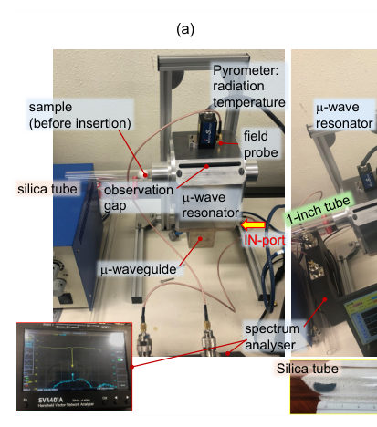
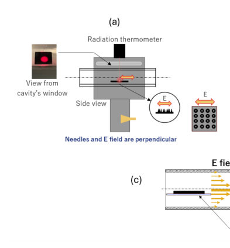
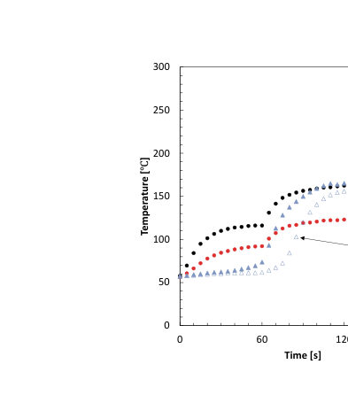

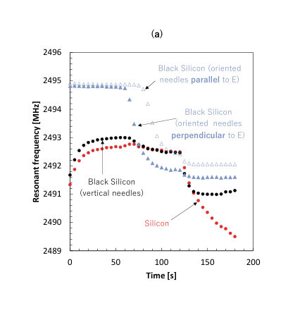
Summary. This paper experimentally investigates microwave heating in black-Silicon structured with nano-needles, comparing vertical and oriented needle arrangements. By monitoring the cavity's resonance frequency and Q-factor as a function of temperature, the authors demonstrate that the needle orientation dictates the effective permittivity and the material's electromagnetic response to microwave fields.
Why it may be interesting. The study demonstrates how nanoscale structuring can engineer material properties (like permittivity) in a highly controllable, temperature-dependent manner, which has implications for designing metamaterials or microwave absorbers.
Detailed structure
Main problem. The study investigates how the orientation of nano-needles on silicon surfaces affects microwave heating efficiency and the resulting anisotropic electromagnetic response when irradiated at 2.45 GHz.
Main result. The nano-needle texture significantly enhances microwave absorption, leading to higher heating rates compared to flat silicon, and the resonance frequency and quality factor show strong dependence on needle orientation and temperature.
Method. Microwave heating experiments were conducted in a cylindrical resonator, monitoring the resonant frequency and quality factor in situ while varying microwave power and measuring temperature with a radiation pyrometer.
Model / system. The system involves black-Si samples (flat, vertical, or oriented nano-needles) placed in a microwave cavity at 2.45 GHz. The physics is governed by the temperature-dependent, anisotropic effective permittivity ($\epsilon_{ ext{eff}}$) of the structured material.
Key observables. Resonance frequency ($f$), Quality factor ($Q$), surface temperature ($T$), and effective permittivity ($\epsilon_{ ext{eff}}$).
Important parameters / regimes. Microwave frequency (2.45 GHz), microwave power (2-4 W), and temperature range ($\sim 190^\circ ext{C}$ to $260^\circ ext{C}$).
Assumptions / limitations. The analysis assumes the measured frequency/Q-factor shifts are dominated by changes in the effective permittivity due to temperature-activated carrier generation and dielectric polarization.
Figures summary. Figures illustrate the experimental setup, time evolution of temperature and resonance parameters ($f$ and $Q$) for different needle orientations, and plots showing the sample-specific frequency and Q-factor dependence on temperature.
Paper structure. The paper details the experimental setup, compares heating behavior across three sample types (flat, vertical, oriented), and analyzes the temperature-dependent shifts in the cavity resonance parameters to deduce the anisotropic effective permittivity.
Abstract
Silicon, which is highly reflective and has negligible absorption at the microwave 2.45 GHz range, can be heated when it is turned into black-Si with a surface texture of nano-needles made by SF6/O2 plasma etching. Microwave heating of flat Si and of black-Si with vertical and with tilted (oriented) nano-needles was compared under identical conditions in a cylindrical TM010 resonator. Samples were placed horizontally on a 150-micrometer-thick cover glass, which standardized their height and position inside the cavity and allowed a common calibration of the radiation thermometer against a K-type thermocouple. Under a stepwise protocol of only 2-3-4 W of microwave power (60 s per step), black-Si with vertical needles reached ~ 260 C, systematically exceeding flat Si (~ 190 C), while black-Si with oriented needles showed a delayed but abrupt onset of heating at 3 W. In situ monitoring of the cavity resonance revealed a 2-3 MHz downshift of the resonance frequency f for all samples, with the drift consistently appearing once the sample temperature exceeded ~ 120 - 150 C, consistent with thermally activated carrier generation in Si. At a given temperature, each sample loads the cavity at a different f and quality factor Q, indicating an orientation-dependent effective permittivity of the nano-needle array, in line with the strong form birefringence of tilted black-Si. Application potential and challenges in the quantitative temperature and permittivity determination are discussed.
Reducing the Gate-Induced Drain-Leakage Current of Carbon-Nanotube Transistors by Subliming Dispersants with Back-End-of-Line Compatible Temperature
Authors: Takumi Inaba, Yuichi Kato, Yoko Iizumi, Yasuhiko Fujita, Kazufumi Kobashi, Takahiro Morimoto, Toshiya Okazaki
Type: experiment · Category: other · PDF: https://arxiv.org/pdf/2609.13583v1
Analysis basis: full PDF text, analyzed in chunks

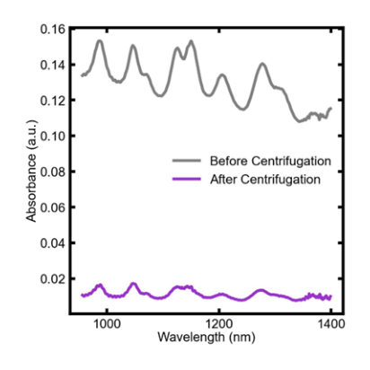

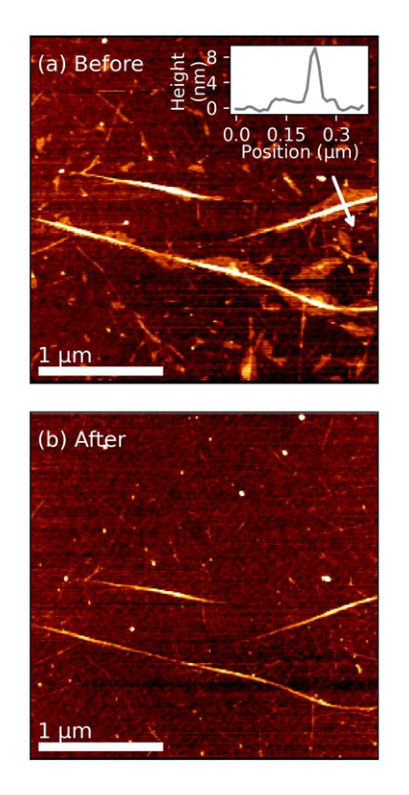
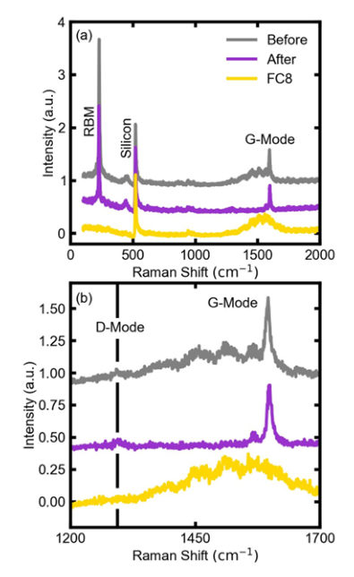
Summary. This work addresses the critical challenge of high leakage current in CNTFETs for advanced electronics by introducing a low-temperature, BEOL-compatible cleaning method. By sublimating residual dispersants, the researchers achieved an order-of-magnitude reduction in leakage current while simultaneously improving the transistor's overall performance characteristics.
Why it may be interesting. While the core physics is semiconductor device engineering, the precise control over surface chemistry and interface states at low temperatures is relevant to understanding charge transport in nanoscale systems, which has parallels in open quantum systems where environmental coupling dictates coherence.
Detailed structure
Main problem. The primary goal is to reduce the gate-induced drain-leakage current ($I_{off}$) in Carbon-Nanotube Field-Effect Transistors (CNTFETs) to enable their use in low-power, monolithic 3D integration (M3D) back-end-of-line (BEOL) processes.
Main result. A low-temperature, BEOL-compatible cleaning process using a sublimable dispersant successfully reduced the leakage current by approximately one order of magnitude while improving other device metrics like on-current and subthreshold slope.
Method. The researchers developed and implemented a vacuum annealing process below $250^\circ ext{C}$ to sublimate residual dispersants from the CNT films, followed by comprehensive electrical and spectroscopic characterization.
Model / system. The study focuses on CNTFETs fabricated on silicon wafers, utilizing semiconducting single-walled CNTs as the channel material. The performance is critically dependent on the removal of residual organic dispersants (like FC8) left over from the CNT deposition process.
Key observables. Gate-induced drain leakage current ($I_{off}$), on-current, subthreshold slope (SS), threshold voltage variability, and the presence/absence of dispersant-specific Raman or IR peaks.
Important parameters / regimes. Temperature limit ($<250^\circ ext{C}$ for BEOL compatibility), leakage current reduction (one order of magnitude), and the specific dispersant used (Flavin derivative, FC8).
Assumptions / limitations. The cleaning process is assumed to be non-detrimental to the intrinsic CNT morphology or lattice structure, which was verified by AFM and Raman spectroscopy.
Figures summary. Figures compare electrical characteristics ($I_d$ vs $V_g$) before and after cleaning, showing leakage suppression. Spectroscopy (Raman/AFM-IR) confirms the removal of dispersant signatures while preserving the CNT structure.
Paper structure. The paper establishes the need for low-leakage CNTFETs for M3D integration. It details the novel, low-temperature cleaning process using a sublimable dispersant. Results demonstrate significant electrical improvements, confirming the removal of residues and the resulting enhancement in device performance metrics.
Abstract
Carbon nanotube field-effect transistors (CNTFETs) are promising for monolithic 3D integration with silicon CMOS circuits in back-end-of-line (BEOL) processes. Further reduction in off-state leakage is essential for practical applications. In this study, we develop a low-temperature cleaning process for CNT-deposited wafers using a sublimable CNT dispersant. The process is carried out below 250 °C, making it BEOL-compatible, and does not deteriorate CNT morphology or lattice structure, as confirmed by atomic force microscopy and Raman spectroscopy. As a result, gate-induced drain leakage current originating from residual dispersants is reduced by approximately one order of magnitude. In addition, improvements in on-current, subthreshold slope, and threshold voltage variability are observed after the cleaning process. This study demonstrates a material-enabled approach to improve the transfer characteristics of CNTFETs and provides a practical route toward low-power CNT electronics.
Spatiotemporal programming via asymmetric dielectric engineering for nonvolatile 2D optoelectronics
Authors: Xiaoguang Luo, Xiaolong Zhang, Honglei Chen, Jiaming Wang, Fan Liu, Jiongtao Zhang, Junqiang Zhang, Yihan Yin, Jinpeng Xu, Lei Ying, Renjing Xu, Yingchun Cheng, Xuetao Gan, Wei Huang
Type: both · Category: disordered systems and neural networks · PDF: https://arxiv.org/pdf/2609.15771v1
Analysis basis: full PDF text, analyzed in chunks
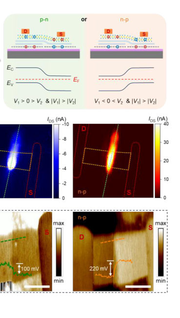
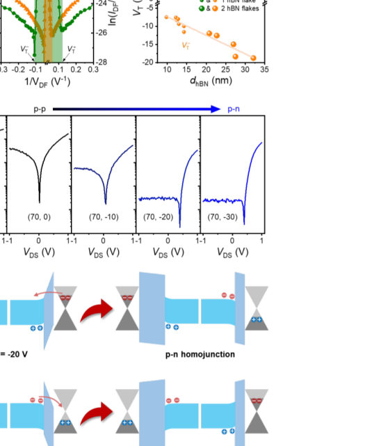
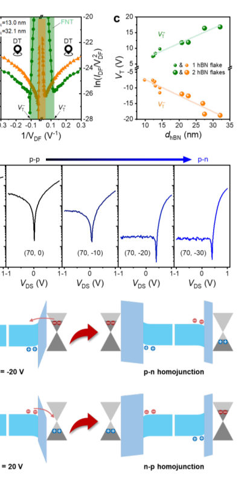
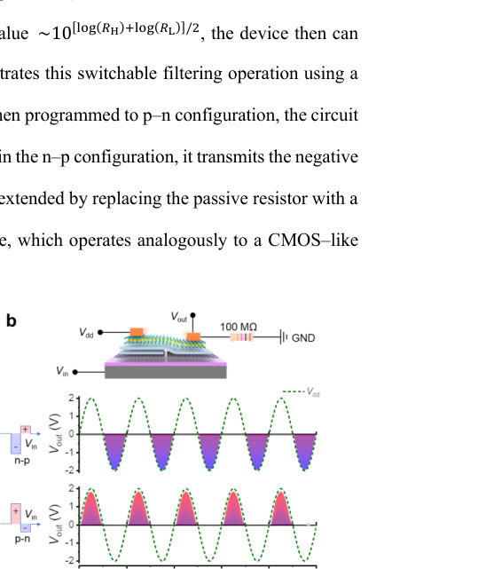
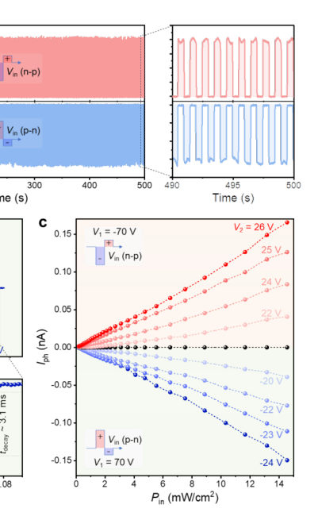
Summary. This work presents a novel dual-floating-gate 2D optoelectronic device capable of nonvolatilely programming its junction polarity and optical response using spatiotemporal gate pulses. The device is shown to function as a versatile platform for rectifying signals, harvesting power, and critically, implementing artificial neural networks directly within the sensor chip for enhanced robustness.
Why it may be interesting. While focused on solid-state electronics, the integration of physical device states (the discrete memory windows) to emulate quantized synaptic weights for machine learning places it at the intersection of physical modeling and computational physics, relevant to understanding emergent behavior in complex systems.
Detailed structure
Main problem. The paper addresses the need for nonvolatile, reconfigurable electronic platforms capable of performing multiple functions like logic encoding, rectification, and photodetection on demand.
Main result. A dual-floating-gate architecture using 2D semiconductors enables spatiotemporal programming to achieve reversible p-n/n-p switching and high-performance in-sensor artificial neural network computation.
Method. The authors combine electrical characterization (I-V curves, transfer characteristics) with optical measurements (photocurrent mapping) and machine learning simulation (ANN training/quantization).
Model / system. The core system is a dual-floating-gate (DFG) device built on 2D semiconductors (MoTe2), utilizing a symmetry-broken tunneling dielectric stack for programming. This structure allows for the creation of stable, nonvolatile homojunctions.
Key observables. Polarity switching ratio ($\sim 10^4$), responsivity (R), power conversion efficiency ($\eta_{PCE}$), and ANN classification accuracy (up to 87.50%).
Important parameters / regimes. Gate-voltage pulse sequences (e.g., (60, –30) V), incident laser power density ($P_{in}$), and the discrete programmable states defining synaptic weights.
Assumptions / limitations. The asymmetry in the dielectric stack is assumed to be due to non-uniform tunneling paths, and the ANN performance relies on the quantization of weights into these discrete physical states.
Figures summary. Figures illustrate device schematics, band structures, output characteristics showing p-n/n-p switching, photocurrent mapping confirming homojunctions, and transfer curves demonstrating memory windows.
Paper structure. The paper progresses from demonstrating basic nonvolatile switching and rectification to characterizing photovoltaic performance, and finally applying the device's programmable photoresponse to implement and test an in-sensor ANN for action classification.
Abstract
Ambipolar two dimensional (2D) semiconductors integrated with floating-gate architectures offer a promising platform for nonvolatile, reconfigurable electronics. However, the switching between p-n and n-p junction polarities has conventionally required complex multi-gate designs, hindering the scalability and integration density. Here, we demonstrate a spatiotemporal programming strategy using a dual-floating-gate architecture with a symmetry broken tunneling dielectric. An asymmetric dielectric stack creates distinct tunneling thresholds for two floating gates, enabling a single input gate to encode spatial doping profiles in the 2D channel via defined voltage pulse sequences. We achieve on demand, nonvolatile, and reversible switching between p-n and n-p configurations with excellent retention and endurance. The reconfigurable homojunction serves as a multifunctional platform for logic encoding, rectification, photodetection, and in sensor computing. This work establishes a design paradigm that replaces spatial input complexity with spatiotemporal programming, paving the way for high-density, multifunctional intelligent hardware.
Thermal Hall effect in elemental niobium, a two-gap superconductor
Authors: Jing Zhang, Xiaokang Li, Kamran Behnia, Zengwei Zhu
Type: experiment · Category: other · PDF: https://arxiv.org/pdf/2609.15663v1
Analysis basis: full PDF text, analyzed in chunks
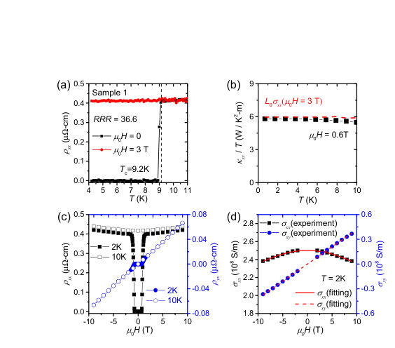
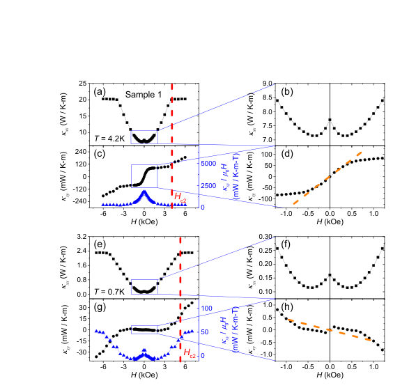
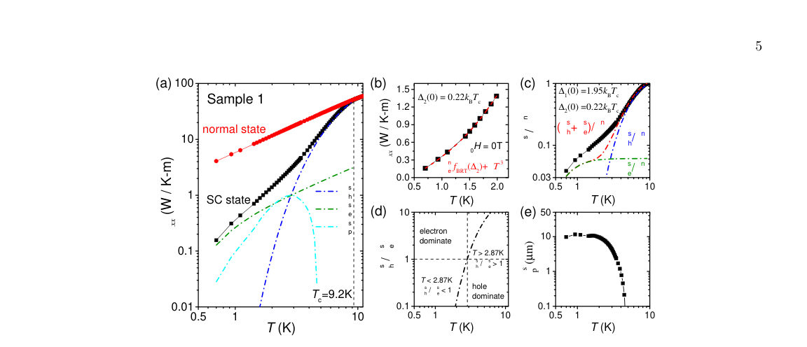
Summary. This work uses thermal Hall effect measurements on niobium to definitively prove it is a two-gap superconductor. By observing a carrier crossover and fitting the data to a two-gap model, the authors quantify a small, previously elusive second superconducting gap. This establishes the thermal Hall effect as a powerful technique for characterizing gap multiplicity in superconductors.
Why it may be interesting. The use of the thermal Hall effect provides a novel, robust diagnostic tool to probe superconducting gap structure, which is highly relevant for understanding complex many-body ground states in condensed matter systems.
Detailed structure
Main problem. To resolve the long-standing controversy regarding whether elemental niobium is a single-gap or a two-gap superconductor, and to demonstrate the thermal Hall effect as a powerful probe for resolving gap multiplicities.
Main result. The thermal Hall effect measurements unambiguously demonstrate a crossover in transverse thermal transport below T_c, confirming two distinct superconducting condensates. Fitting the data yields a small second energy gap of approximately 0.22 k_B T_c.
Method. Measurements of the thermal Hall effect (kappa_xy) and longitudinal thermal conductivity (kappa_xx) are performed under applied magnetic fields, analyzed using the two-gap Bardeen-Rickayzen-Tewordt (BRT) model.
Model / system. The study focuses on elemental niobium (Nb), a multiband superconductor. The analysis employs the two-gap BRT model to account for two distinct superconducting condensates (hole-like and electron-like carriers).
Key observables. Thermal Hall conductivity (kappa_xy), longitudinal thermal conductivity (kappa_xx), and the temperature dependence of the transverse thermal transport crossover.
Important parameters / regimes. Critical temperature (T_c), two superconducting gaps (Delta_1 and Delta_2), and magnetic field strength (up to 6 kOe).
Assumptions / limitations. The analysis assumes the applicability of the two-gap BRT formalism to describe the superconducting state and that the thermal Hall effect is sensitive to the distinct quasiparticle contributions.
Figures summary. Figures show normal state transport properties, kappa_xy vs. H and T, and resolved contributions to superconducting thermal conductivity (kappa_s^h, kappa_s^e) used to extract the two gap values.
Paper structure. The paper establishes the physical system and the need to resolve the gap structure. It details the measurement of kappa_xy and kappa_xx, analyzes the crossover behavior, and finally fits the data to the two-gap BRT model to quantify the second gap.
Abstract
Niobium holds a pivotal place in superconductivity history: it is not only the elemental superconductor with the highest critical temperature, but also a long-standing candidate for multiband pairing whose evidence has remained controversial. A two-gap scenario was proposed as early as 1959, yet experimental proof stayed elusive. Here, through thermal Hall effect measurements, we unambiguously demonstrate a crossover in transverse thermal transport below $T_{\rm c}$, where the dominant carrier switches from hole-like to electron-like upon cooling. This crossover is a clear hallmark of two distinct superconducting condensates. Fitting our data to a two-gap Bardeen-Rickayzen-Tewordt (BRT) model yields a second energy gap of approximately 0.22 $k_{\rm B}T_{\rm c}$, only 11\% of the dominant gap. This small gap size accounts for the difficulty in resolving the two-gap structure in earlier experiments. Crucially, the temperature at which the electron-like contribution to longitudinal thermal conductivity begins to dominate coincides with the onset of the sign reversal in the thermal Hall coefficient, confirming consistency between the two methods, and providing crucial information on the assignment of the superconducting gaps to their respective hole- or electron-like Fermi surface sheets. These findings not only resolve a longstanding controversy, but also establish that multigap superconductivity is far more common than previously assumed, and demonstrate the thermal Hall effect as a powerful probe for resolving gap multiplicities in superconductors.